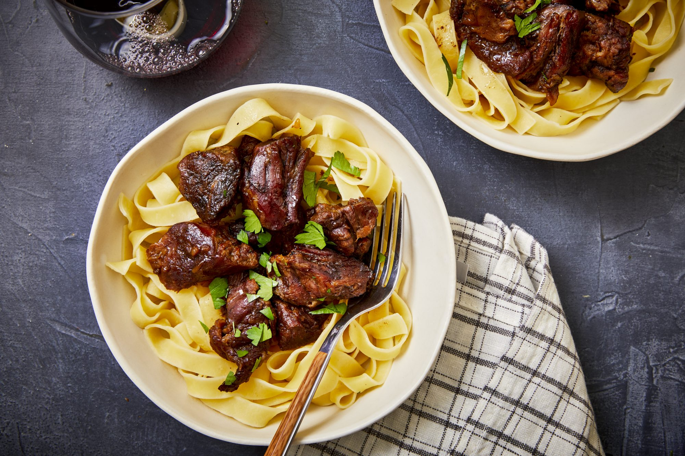

Butter Beef Recipe

Description
This irresistibly rich butter-based beef recipe uses just three ingredients to create a luscious slow cooker meal. Stew meat, onion soup mix, and butter combine for an intensely savory bite you'll want to experience over and over again. Add this popular beef recipe to your rotation for a delightfully meaty dinner any day of the week.
Ingredients
- 3 pounds cubed beef stew meat
- ½ cup butter
- 1 (1 ounce) envelope dry onion soup mix
Steps
- Place beef and butter in a slow cooker and sprinkle onion soup mix over top.
- Cover, and cook until meat is tender, on Low for 8 hours, or on High for 4 to 5 hours. Stir once or twice during cook time.
Return to home